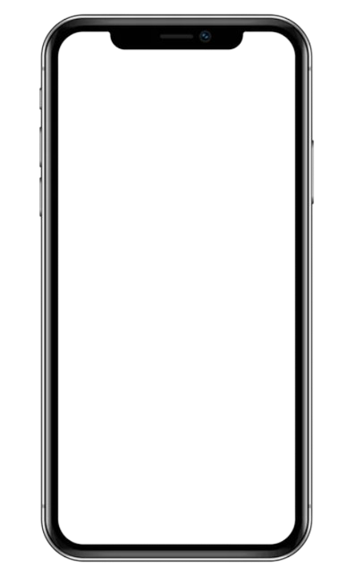
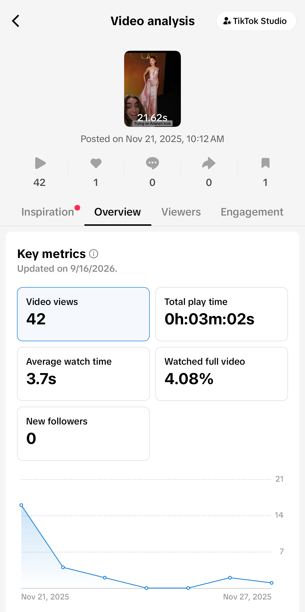
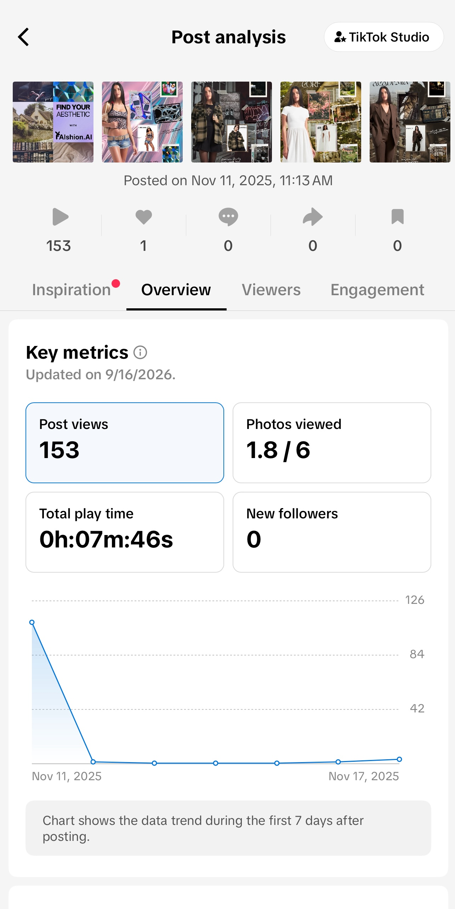
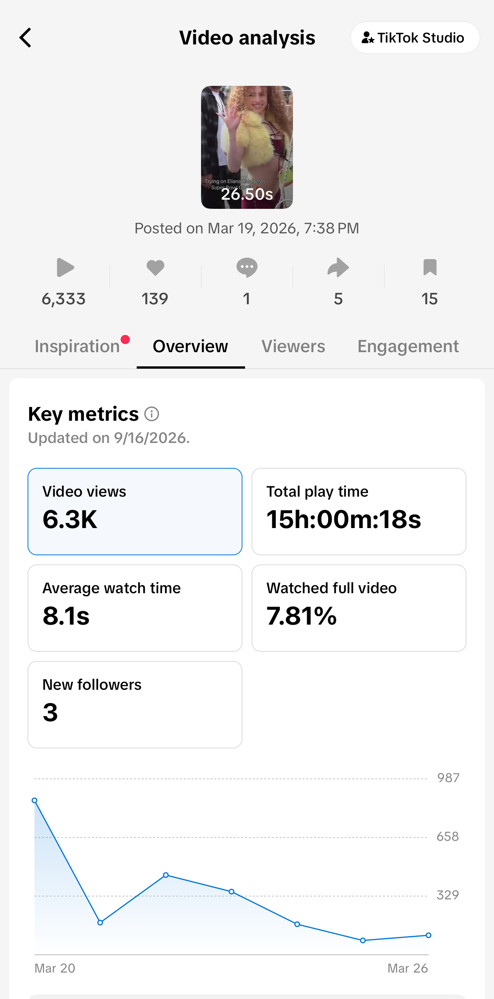
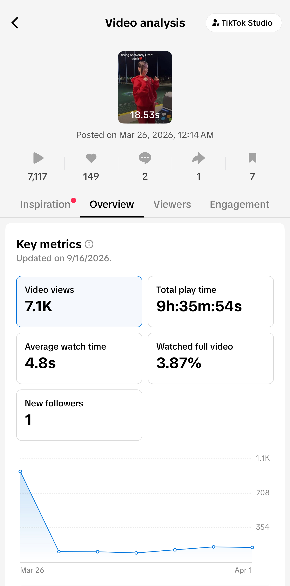
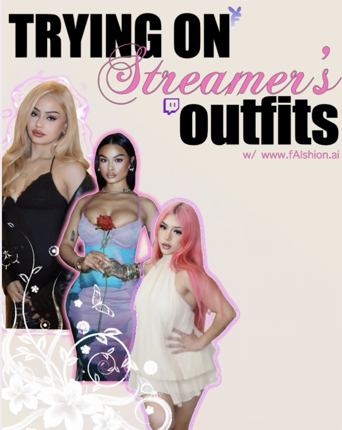
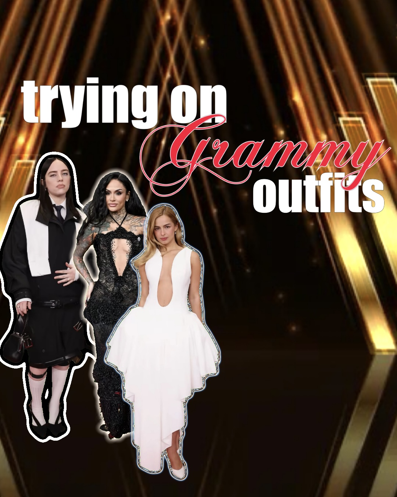

Marketing · Social Media · Graphic Design
Faishion.ai
During my internship at Faishion.ai, I created short-form content for TikTok and Instagram to increase brand awareness and connect the brand with a Gen Z audience. I developed content ideas, created graphics and videos, followed current trends, and used platform insights to refine content and posting strategies.
Marketing & Graphic Design Intern
TikTok · Instagram
Content · Trends · Analytics
TikTok Content
I developed and executed short-form TikTok content from ideation through editing and posting, using timely topics and trends to increase awareness and engagement.

TikTok Performance
I reviewed TikTok insights to understand how content was performing and used those results to inform future content and posting decisions.




Instagram Content
I created Instagram content around recognizable Gen Z internet personalities and timely cultural moments to make Faishion.ai relevant to the platform's audience.


Takeaway
This experience strengthened my ability to create content for different social platforms while balancing creative ideas with audience behavior and performance insights. I learned how to identify trends, adapt them to a brand, and use performance data to make more informed content decisions.